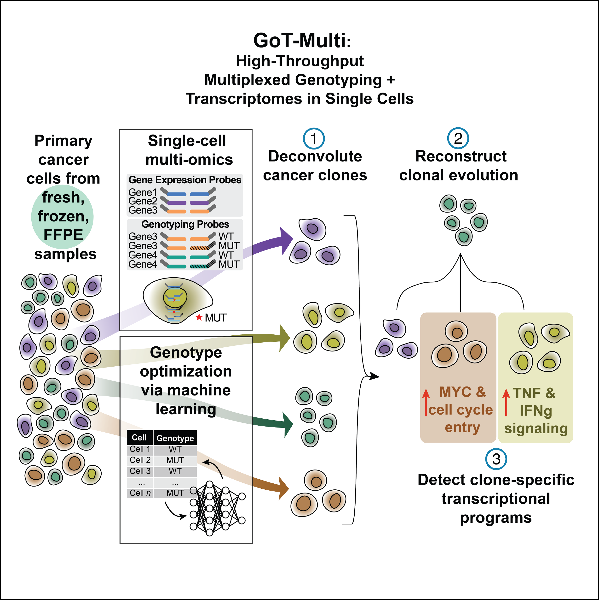

Co-mapping clonal and transcriptional heterogeneity in somatic evolution via GoT-Multi
Pak M*, Saurty-Seerunghen MS*, Wise K, Abera TA, Lama C, Parghi N, Kang T, Sun X, Gao Q, Bao L, Roshal M, Allan JN, Furman RR, Martelotto LG#, Nam AS#. (*Equal contribution; #Co-supervised)
Cell Genomics. 2026 Jan 14.